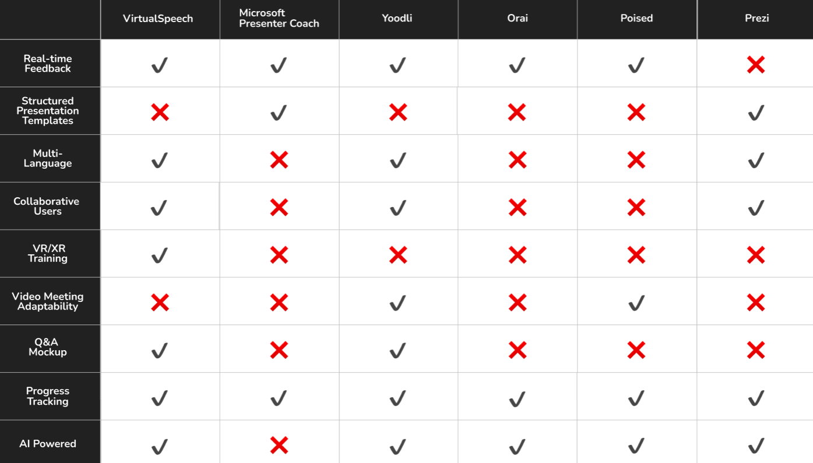
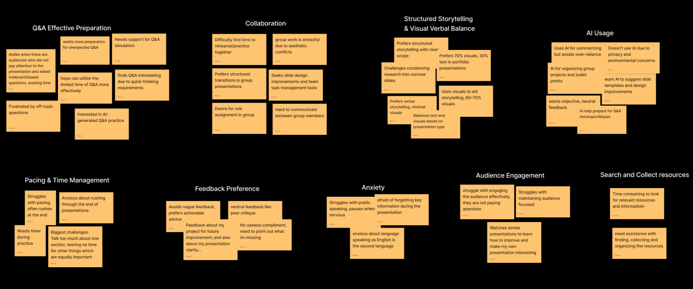
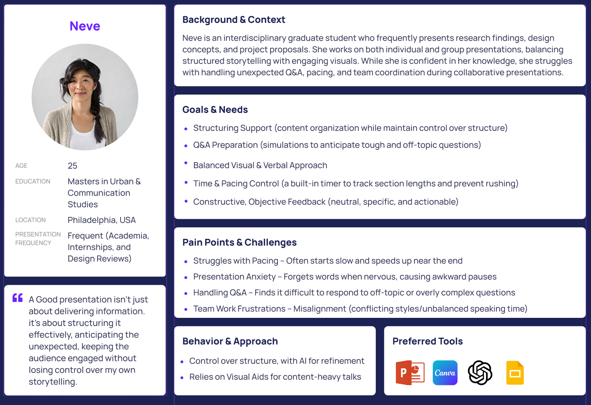
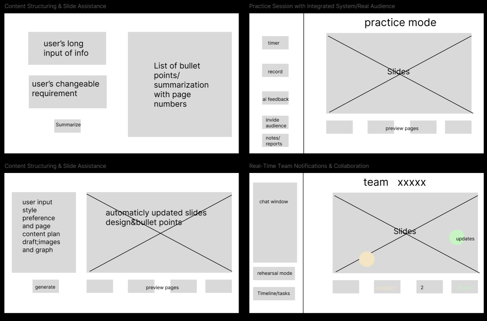
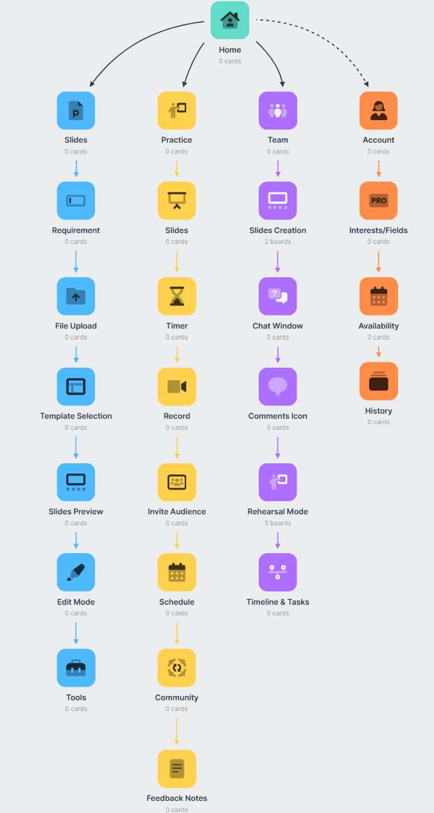
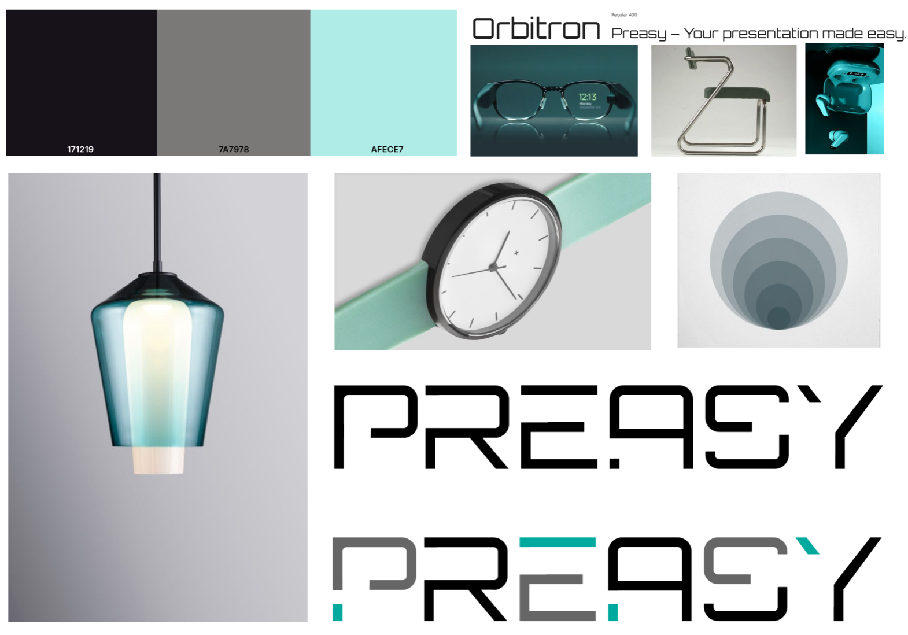
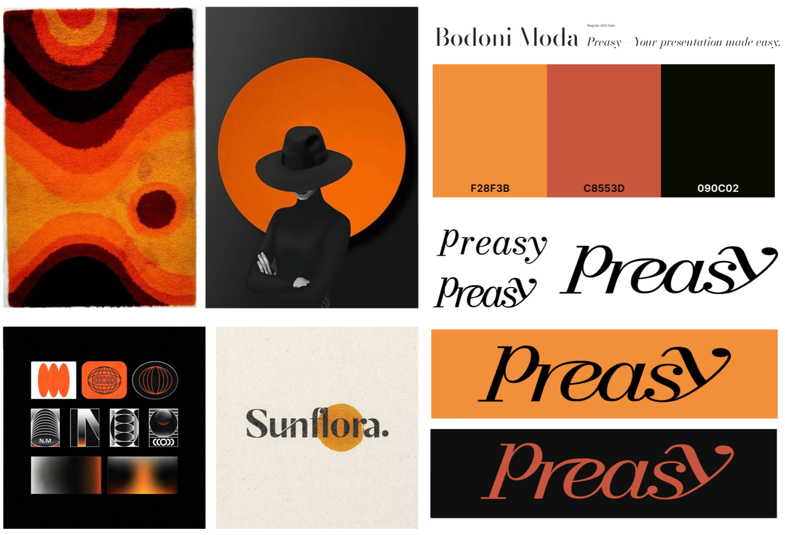
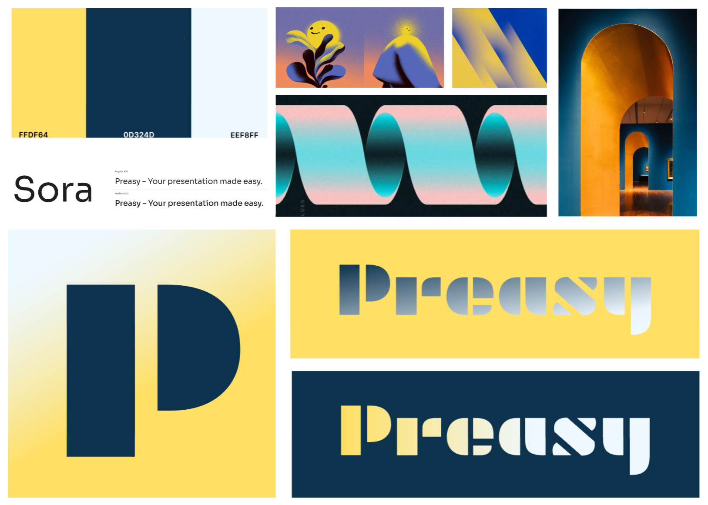
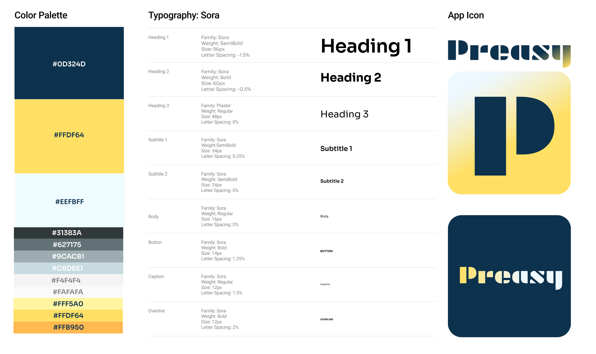
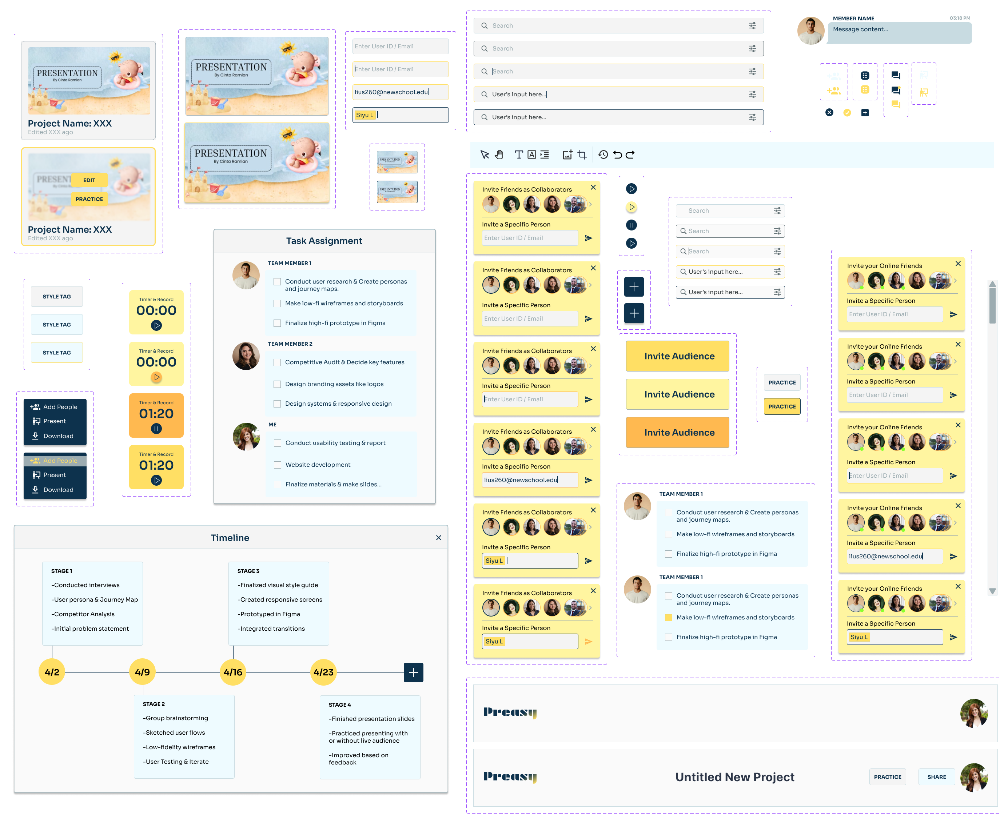

Preasy - A UX Case Study on Rethinking Presentation Preparation
Preasy is a web app which helps users efficiently create slides, rehearse presentations with feedback, and manage team workflows. It supports students and professionals who struggle with clear and confident presentations due to unpreparedness and poor structure.
Problem
People rely on too many scattered tools when preparing for a presentation—Google Slides,Canva, chat apps, Zoom, Microsoft Powerpoint, and more. This disjointed process increases stress and leads to last-minute chaos. Users lack a unified space to plan, rehearse, gather feedback, and work with others efficiently.
Problem Statement:Presentation preparation is rarely streamlined.Students and professionals jump between tools for design, rehearsal, feedback, and collaboration—causing friction, confusion, and stress.
Objective:Research, plan, and design a web experience to help users prepare presentations more efficiently, with a focus on reducing prep time and improving delivery confidence through a unified workflow.
Research & Insights
We wanted to understand how individuals prepare for presentations—what slows them down, what tools they use, and what support they need but lack.


Faced with diverse presentation habits and workflows, we needed to identify which moments in the preparation journey mattered most. By clustering qualitative insights through affinity mapping, we uncovered 3 recurring pain points: the need for effective feedback during Q&A, smoother collaboration management, and clearer support for structured storytelling. These insights guided our user personas, journey mapping, and ultimately informed the prioritization of core features.
User Persona & Journey Map
To clarify our direction, we created a user persona based on research data. Neve, a graduate student who frequently presents design and research work, became a key reference. While she is confident in her content and visual skills, she struggles with pacing, handling off-topic Q&A, and managing team collaboration.

To map out the full experience, we created a user journey map detailing each stage of preparing, rehearsing, and delivering a presentation. It was built early in the process and originally leaned heavily on AI-driven solutions. Although our product direction evolved significantly, the journey map still provided clarity around key moments of friction—especially during planning, group coordination, and live delivery.

Ideation & Strategy
With a clearer understanding of user behaviors, pain points, and moments of friction, I transitioned from research to defining the product's core values. These principles distilled our research insights into clear design intentions—and served as the foundation for ideation and feature development.
To bridge the gap between design principles and concrete functionality, I created an opportunity sheet. This mapped user needs and pain points against potential features, organized by phase and aligned with our core values.

It helped me evaluate which ideas offered the most impact, identify feasibility constraints, and prioritize solutions that would best support clarity, confidence, and collaboration throughout the presentation process. This strategic exercise directly informed the core features that Preasy would ultimately offer.

We also created a brainstorm mindmap based on our HMW statement:"How might we help users deliever engaging presentation through streamlined preparation process?" Later on, we prioritized solutions that were both impactful and feasible. The following key features were designed to address users' most urgent needs—helping them stay organized, confident, and connected throughout the presentation workflow.
Key Features & Sketches

IA & Userflow & Wireframes
Before moving into wireframes, I mapped out how Preasy's features would be structured and used in practice. The sitemap organizes pages based on user priorities like planning, practicing, and collaboration. Meanwhile, the user flow chart illustrates how users move through tasks like creating slides, communicating with teammates, and practicing with audience feedback.



User Testing & Iteration
First, users consistently preferred having control over the slide creation process. Rather than relying on AI-generated content, they wanted to choose from templates and make edits themselves. In response, we removed the AI slide generator and positioned slide creation as a lightweight, user-driven step—shifting our focus toward rehearsal and collaboration.
Second, participants expressed a strong preference for real, human feedback over automated suggestions. Many emphasized the value of comments from peers, instructors, or teammates, especially in academic and collaborative settings. This led us to prioritize features that facilitate structured peer review, such as tagging and focused reviewer prompts.
Third, users appreciated having real-time communication and project tracking integrated within the platform. Instead of relying on external tools like Instagram to coordinate, they valued being able to chat and assign tasks directly within the interface. We responded by emphasizing an in-app live chat and shared team dashboard.
Finally, we addressed concerns around layout consistency. In early wireframes, elements like the toolbar shifted position when collaborators were added, which caused confusion. We standardized the layout across solo and collaborative modes to support user familiarity and reduce friction.
Branding & Visual Identity
To define Preasy's visual language, we explored three distinct brand directions—from playful and energetic to clean and professional. Each moodboard reflected a different personality and user emotion we wanted to test. Through feedback and internal discussions, we evaluated how each direction aligned with the product's values: clarity, confidence, and collaboration.


We ultimately selected a brand identity that felt vibrant, sleek, and clean. The color palette features energetic accent tones paired with structured whitespace, while the typography remains modern and approachable. This direction supports Preasy's goal of making presentation prep feel dynamic and motivating.

Users described the final aesthetic as “motivating but not overwhelming”—which validated our choice to lean into vibrancy while maintaining clarity.
Design System
We built a reusable design system in Figma to support fast prototyping and visual consistency. It includes standardized components—buttons, inputs, tags, layout grids—organized with variants and naming conventions.
Our design choices followed three key principles:
Familiar Visual Language: Inspired by well-known productivity tools to reduce the learning curve and boost user confidence.
Accessible & Readable: High contrast, clean type, and scalable components ensure clarity across devices.
Trustworthy Look & Feel:Structured layouts, calm and neutral colors convey focus, stability, and professionalism.




Reflection
This was the first time I led a UX project through a full cycle—from research to case study documentation. I improved in narrowing scope, prioritizing features, and presenting insights clearly. Seeing how real feedback shaped the product was exciting and humbling. Preasy confirmed my passion for UI/UX digital product design and helped me grow into a more intentional designer.